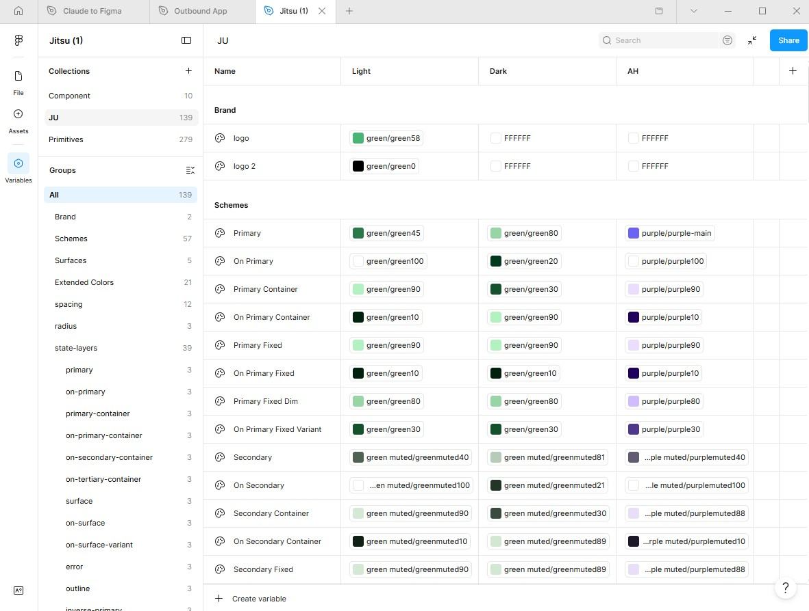

This project is under NDA. Enter the password to view.
Building a scalable, multi-product design system on Material 3 — a shared component library and token architecture across Figma and Claude Design that survived a full company rebrand without touching a single component.
As Jitsu grew from its Axlehire roots, multiple products were being designed simultaneously with no shared design language. Components were duplicated across files, color values were hardcoded at the component level, and every product had its own slightly different version of the same button. At the same time, the company was going through a full rebrand.
Without a proper system in place, that rebrand would mean manually hunting through every fill in every product file. The challenge was to build a system robust enough to absorb a company identity change — and flexible enough to give each product its own visual character within a shared foundation.
I was building this system from scratch while still carrying my full workload across other product projects, with no additional headcount to help. The other designer on the team was junior and had no prior exposure to design systems, so part of this effort included mentoring her so she could help maintain the system going forward.
Pre-system audit — duplicated components, inconsistent spacing, and no shared token layer across product Figma files.
Before designing anything new, I audited every active Figma file to map what existed and where the inconsistencies were coming from. The findings made the problem concrete:
"If we rebrand without a system, we're manually touching thousands of fills across every screen in every file."
— Observation during pre-system auditI chose Material 3 as the design language foundation — not for its aesthetics, but because it provided a battle-tested, accessible component system I could adapt rather than invent. That freed me to focus on the token architecture, which was the actual design problem.
The system uses a three-tier token model. Components only reference Tier 3 tokens, which alias Tier 2 semantic tokens, which map to raw Tier 1 primitive values. Swapping a product theme means changing only the Tier 2 → Tier 1 mapping — no component work needed.
JU Token Collection — Light Mode
Color
Typography
Components
Status
Address Card
Stop
JU token collection — Light mode color roles, the Open Sans / Roboto type scale, and core components (Status, Address Card, Stop) pulled directly from the Jitsu Figma library via the Figma MCP.
Rather than building separate component libraries per product, the system uses Figma Variable Modes — one collection, three themes. Switching a frame's brand is a single click; every component inside re-colors automatically with no manual edits.
The rebrand from Axlehire to Jitsu was the real test. I generated Jitsu's green tonal palette, added a new Variable Mode, and mapped the semantic tokens to the new values. Every product screen updated instantly. Not a single component was opened or edited.
The original purple brand preserved as a Variable Mode. Still active in the system for reference — not deleted, just superseded by the Jitsu theme.
Green as the primary color role, mapped from the Jitsu tonal palette. Used across the Warehouse Dashboard, Outbound App, and all future Jitsu products.
The same green palette adapted for dark surfaces — lighter primary tones for contrast, deeper container fills for elevation — generated from the same key color.

Design systems are typically built by dedicated teams. I was the sole designer responsible for the system while simultaneously delivering product work across multiple active projects. To match the output expected of a larger team, I integrated Claude Code into my Figma workflow via the Figma MCP.
The system is actively used across Jitsu's product suite. The rebrand validated the architecture — and the workflow proved that a single designer with the right tooling can sustain what normally requires a dedicated systems team.
Total Figma variables across Primitives and semantic layers
Product themes supported from a single shared component library
Components manually edited during the Axlehire → Jitsu rebrand, with 0 dedicated headcount during the build
The most important decision in this project wasn't visual — it was structural. Investing in a proper token hierarchy before building any components meant the system could absorb a full company rebrand without rework. The short-term cost of that architecture paid back immediately when the rebrand happened.
Working solo on a system that typically requires a team also changed how I think about design tooling. Claude Code didn't replace design judgment — it eliminated the high-volume mechanical work that would have consumed the time needed for judgment. The best use of automation is always on tasks with clear rules and large repetition, freeing attention for the decisions that don't have clear rules.
Going forward, I'd like to formalize the Claude Design side of the system to more tightly mirror the Figma variable structure, and build a living documentation page that non-designers on the team can reference without needing to open Figma.